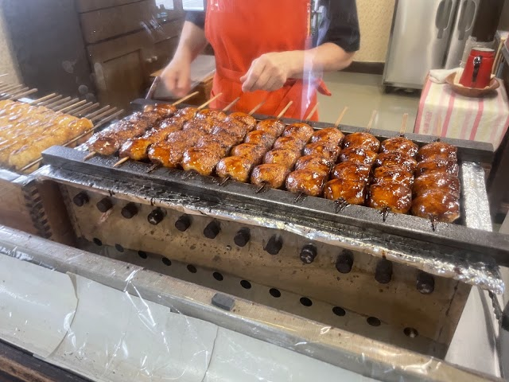
| 営業時間 | 月・水・木・金・土・日 10:30〜17:00 |
|---|---|
| 定休日 | 火曜 |
| 住所 | 群馬県前橋市平和町２丁目５−２０ |
| 予約 | 要確認 — ☎ 027-231-2439 |
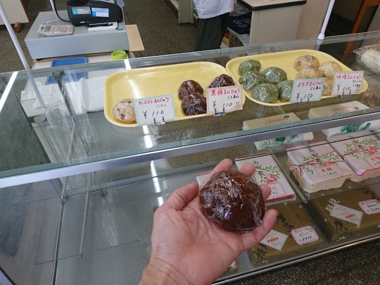
| 営業時間 | 火・水・木・金・土・日 9:00〜18:00 |
|---|---|
| 定休日 | 月曜 |
| 住所 | 群馬県前橋市下小出町３丁目２−１ |
| 予約 | 要確認 — ☎ 027-231-1245 ／ 公式サイト |
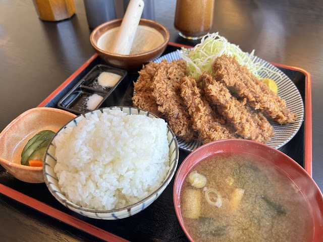
| 営業時間 | 月・火・水・木・金 11:00〜13:30 ／ 土・日 9:00〜10:00, 11:00〜13:30 |
|---|---|
| 定休日 | なし(要最終確認) |
| 住所 | 群馬県前橋市野中町１５３−１０ |
| 予約 | 可 — ☎ 027-263-4747 ／ 公式サイト |
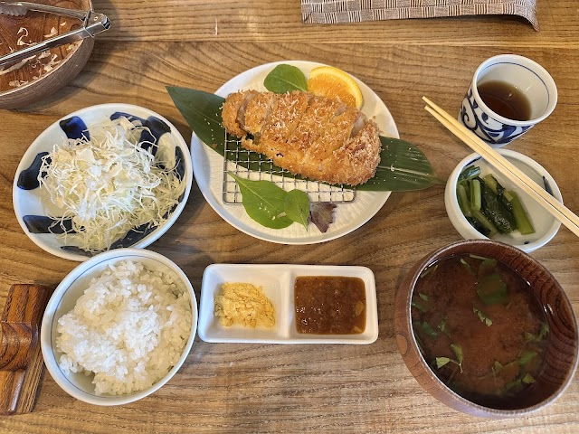
| 営業時間 | 月・火・木・金 11:00〜15:00, 17:00〜21:00 ／ 土・日 11:00〜21:00 |
|---|---|
| 定休日 | 水曜 |
| 住所 | 群馬県前橋市上長磯町２８２−１ かつ久無庵 |
| 予約 | 可 — ☎ 027-263-4129 ／ 公式サイト |
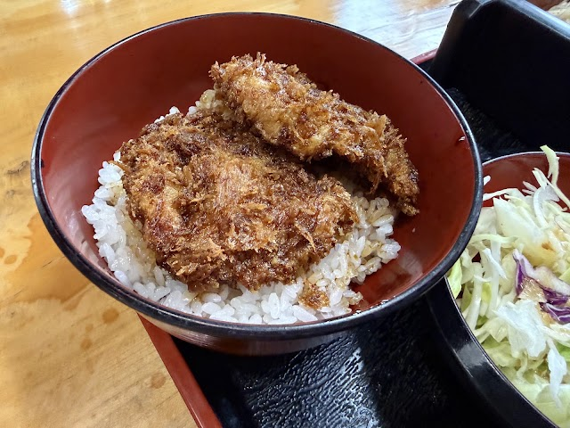
| 営業時間 | 月・木・金・土・日 11:00〜14:30, 17:00〜19:30 ／ 火 11:00〜14:30 |
|---|---|
| 定休日 | 水曜 |
| 住所 | 群馬県前橋市総社町総社１４９１−１ |
| 予約 | 要確認 — ☎ 027-251-5807 |
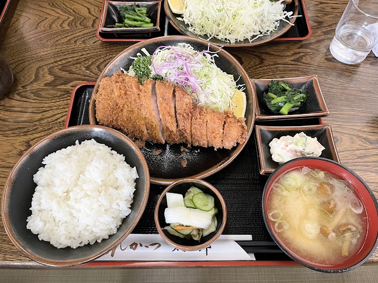
| 営業時間 | 月・火・水・木・金・土 11:30〜13:45, 17:00〜19:15 |
|---|---|
| 定休日 | 日曜 |
| 住所 | 群馬県前橋市高井町１丁目２６−３３ |
| 予約 | 要確認 — ☎ 027-253-1305 |
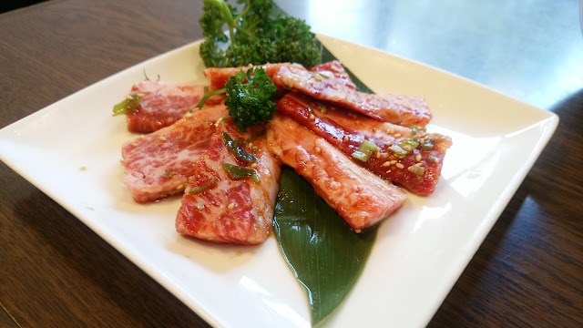
| 営業時間 | 月・火・水・木・金 11:30〜15:00, 17:00〜22:30 ／ 土・日 11:30〜22:30 |
|---|---|
| 定休日 | なし(要最終確認) |
| 住所 | 群馬県前橋市川原町１丁目３０−２３ |
| 予約 | 可 — ☎ 027-234-3329 ／ 公式サイト |
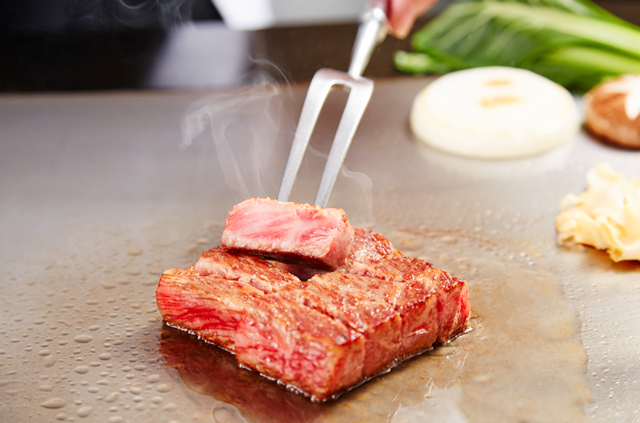
| 営業時間 | 月・水・木・金・土・日 11:30〜15:00, 17:00〜22:30 |
|---|---|
| 定休日 | 火曜 |
| 住所 | 群馬県前橋市日吉町４丁目37−６ |
| 予約 | 可 — ☎ 027-231-7337 ／ 公式サイト |
| 営業時間 | 月・火・水・金・土・日 11:00〜15:00, 17:00〜20:30 |
|---|---|
| 定休日 | 木曜 |
| 住所 | 群馬県前橋市大友町３丁目24−１１ |
| 予約 | 可 — ☎ 027-254-4187 ／ 公式サイト |
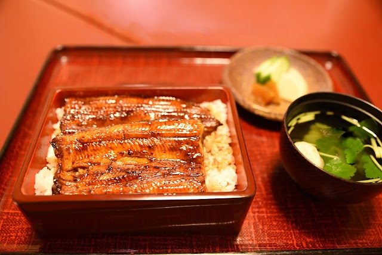
| 営業時間 | 月・火・水・木・金・土・日 11:30〜14:00, 17:30〜21:00 |
|---|---|
| 定休日 | なし(要最終確認) |
| 住所 | 群馬県前橋市千代田町４丁目１３−１ |
| 予約 | 可 — ☎ 027-231-3768 ／ 公式サイト |
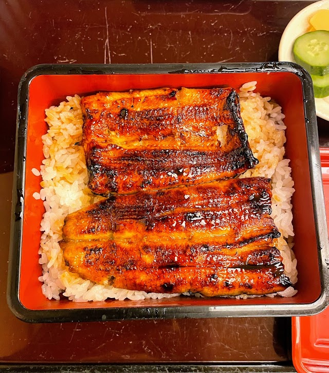
| 営業時間 | 火・水・木・金・土・日 11:00〜14:00, 17:00〜20:00 |
|---|---|
| 定休日 | 月曜 |
| 住所 | 群馬県前橋市西片貝町５丁目２３−６ |
| 予約 | 可 — ☎ 027-221-0135 ／ 公式サイト |
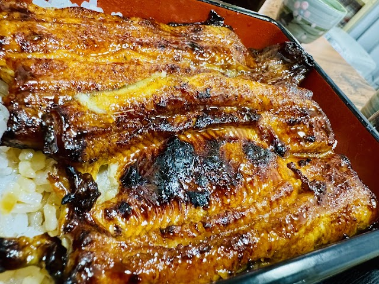
| 営業時間 | 月・火・水・金・土・日 11:00〜14:00, 16:30〜18:00 |
|---|---|
| 定休日 | 木曜 |
| 住所 | 群馬県前橋市住吉町１丁目１−３ うなぎひさごや |
| 予約 | 可 — ☎ 027-231-7855 |
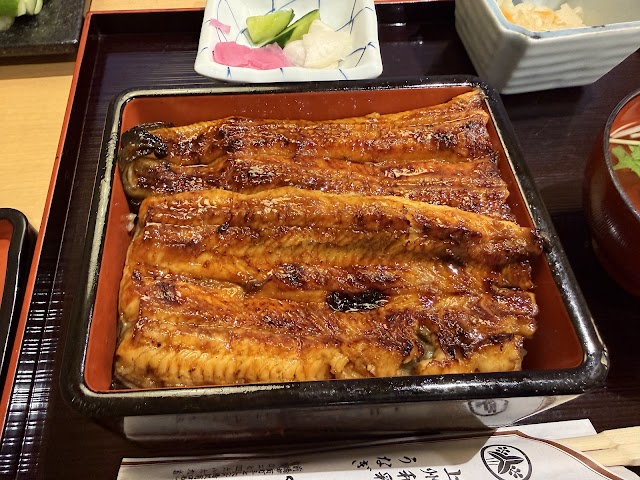
| 営業時間 | 火 11:00〜14:30 ／ 水・木・金・土・日 11:00〜14:30, 17:00〜21:00 |
|---|---|
| 定休日 | 月曜 |
| 住所 | 群馬県前橋市南町３丁目７−６ ヨシモトビル |
| 予約 | 可 — ☎ 050-5487-6094 ／ 公式サイト |
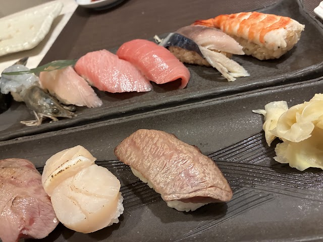
| 営業時間 | 月・水・木・金 11:30〜15:00, 17:00〜22:00 ／ 土・日 11:30〜22:00 |
|---|---|
| 定休日 | 火曜 |
| 住所 | 群馬県前橋市天川原町１丁目４８−２ |
| 予約 | 可 — ☎ 050-5484-3090 ／ 公式サイト |
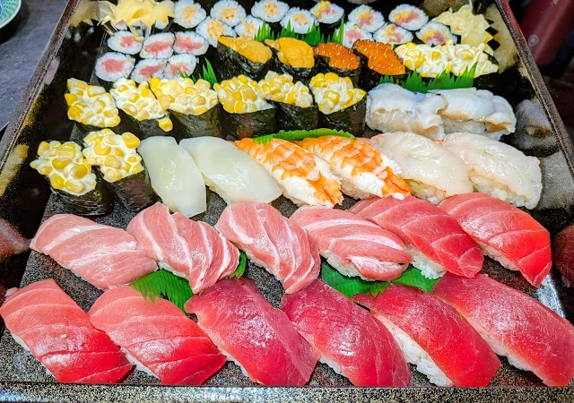
| 営業時間 | 月・火・金・土・日 11:30〜14:30, 17:30〜21:00 ／ 水 11:30〜21:00 |
|---|---|
| 定休日 | 木曜 |
| 住所 | 群馬県前橋市広瀬町１丁目２３−１ |
| 予約 | 可 — ☎ 027-261-2671 ／ 公式サイト |
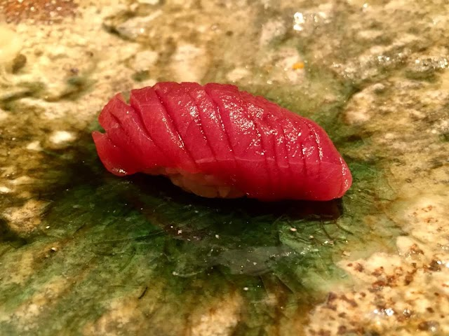
| 営業時間 | 月・火・水・木・金・土 18:00〜23:00 |
|---|---|
| 定休日 | 日曜 |
| 住所 | 群馬県前橋市千代田町４丁目６−１ |
| 予約 | 可 — ☎ 027-237-3451 ／ 公式サイト |
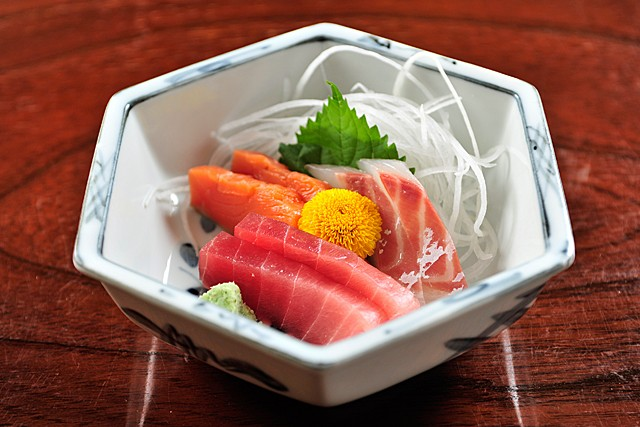
| 営業時間 | 月・火・水・木・金・土 18:00〜23:00 |
|---|---|
| 定休日 | 日曜 |
| 住所 | 群馬県前橋市千代田町５丁目６−３ |
| 予約 | 可 — ☎ 027-233-4850 ／ 公式サイト |
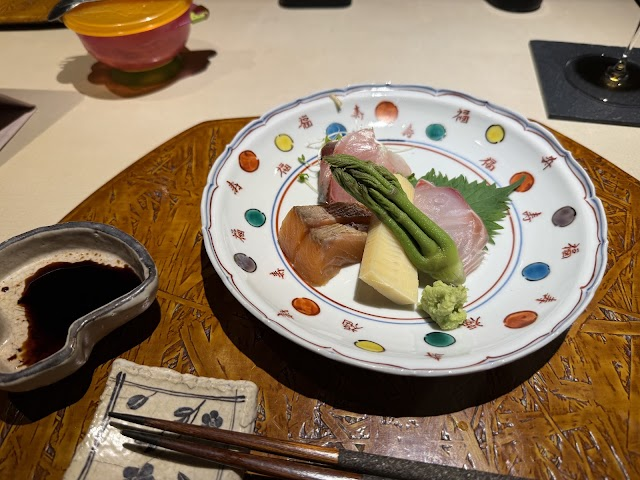
| 営業時間 | 月・火・水・木・金・土・日 11:30〜15:00, 17:30〜23:00 |
|---|---|
| 定休日 | なし(要最終確認) |
| 住所 | 群馬県前橋市三河町１丁目５−８ |
| 予約 | 可 — ☎ 027-289-3557 ／ 公式サイト |
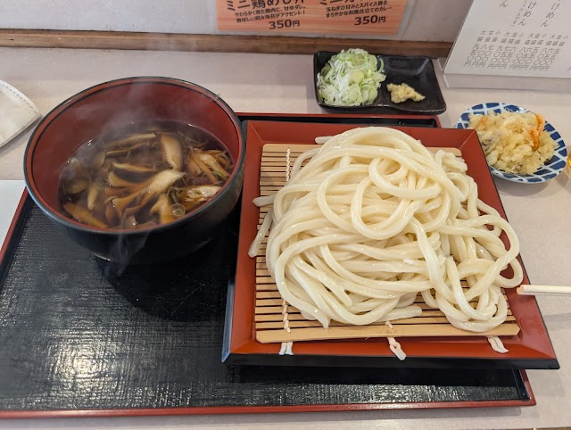
| 営業時間 | 11:00〜14:30 |
|---|---|
| 定休日 | 日曜・祝日 |
| 住所 | 群馬県前橋市大渡町１丁目１１−１２ |
| 予約 | 要確認 — ☎ 027-251-3046 ／ 公式サイト |
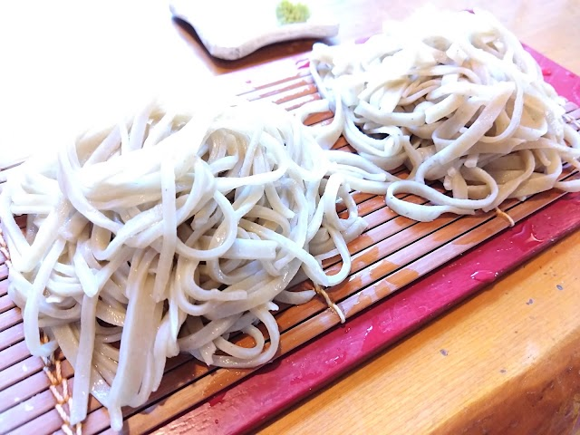
| 営業時間 | 月・水・木・金・土・日 11:30〜15:00, 17:00〜20:30 |
|---|---|
| 定休日 | 火曜 |
| 住所 | 群馬県前橋市青柳町５９４−２ |
| 予約 | 要確認 — ☎ 027-233-6114 |
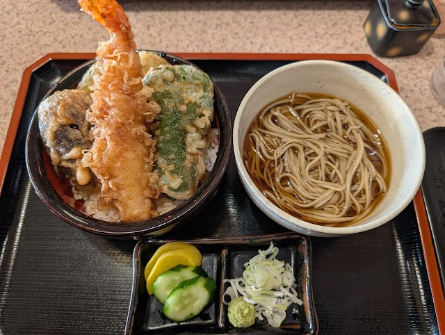
| 営業時間 | 火・水・木・金 11:00〜14:30 ／ 土 11:00〜14:30, 17:30〜20:00 ／ 日 11:00〜14:30, 17:00〜20:00 |
|---|---|
| 定休日 | 月曜 |
| 住所 | 群馬県前橋市荒子町３００−４ |
| 予約 | 可 — ☎ 027-268-1898 ／ 公式サイト |
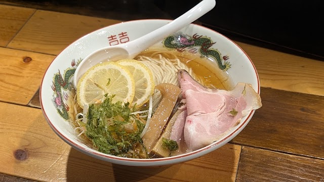
| 営業時間 | 火・水・木・金・土 11:00〜14:00, 18:00〜22:00 |
|---|---|
| 定休日 | 月・日曜 |
| 住所 | 群馬県前橋市住吉町２丁目８−１４ 住吉ビル １Ｆ |
| 予約 | 可 — ☎ 027-215-7080 ／ 公式サイト |
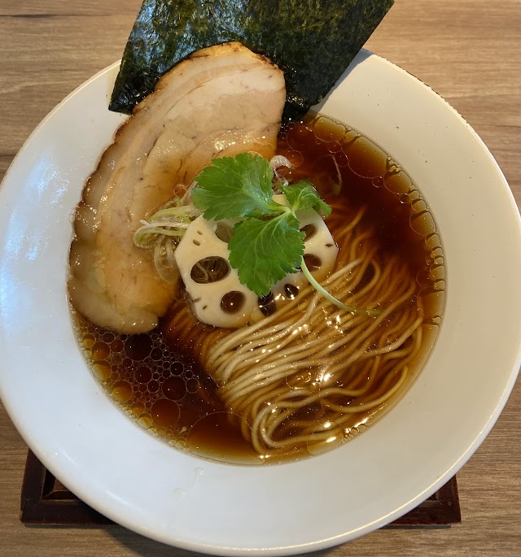
| 営業時間 | 月・火・金・土・日 11:30〜14:30, 18:00〜20:30 |
|---|---|
| 定休日 | 水・木曜 |
| 住所 | 群馬県前橋市天川大島町１丁目４ |
| 予約 | 要確認 — ☎ 027-223-6603 ／ 公式サイト |
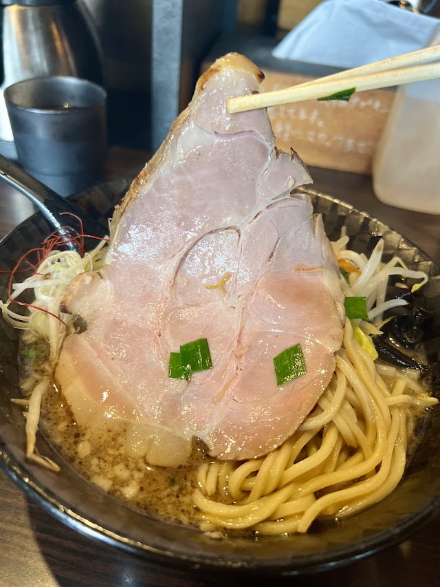
| 営業時間 | 月・木・金・土・日 11:00〜20:00 ／ 火 11:00〜15:00 |
|---|---|
| 定休日 | 水曜 |
| 住所 | 群馬県前橋市南町２丁目５２−３ 西村第一ハイツ １F |
| 予約 | 要確認 — 公式サイト |
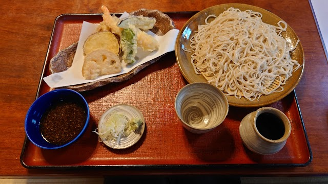
| 営業時間 | 月・水・木・金・土・日 11:30〜14:30 |
|---|---|
| 定休日 | 火曜 |
| 住所 | 群馬県前橋市文京町４丁目１２−３ 武本庵 |
| 予約 | 可 — ☎ 027-221-6776 |
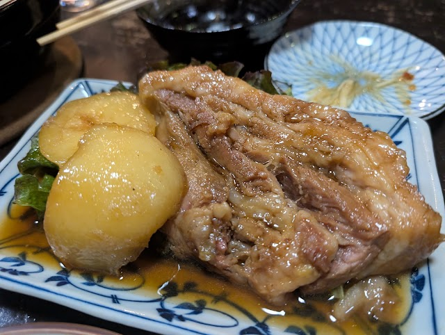
| 営業時間 | 月・水・木・金・土 17:00〜3:00 ／ 火 18:00〜3:00 |
|---|---|
| 定休日 | 日曜 |
| 住所 | 群馬県前橋市千代田町４丁目２１−６ ビルＢ |
| 予約 | 可 — ☎ 027-233-3131 |
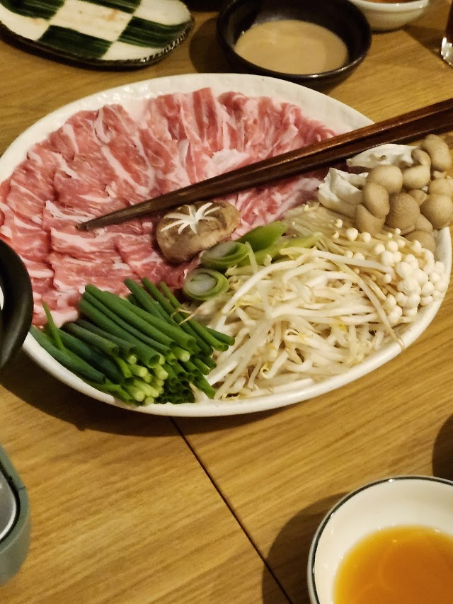
| 営業時間 | 月・火・水・木・金・土 17:00〜0:00 |
|---|---|
| 定休日 | 日曜 |
| 住所 | 群馬県前橋市千代田町５丁目１８−１４ つぼ寿司ビル |
| 予約 | 可 — ☎ 027-226-5955 ／ 公式サイト |
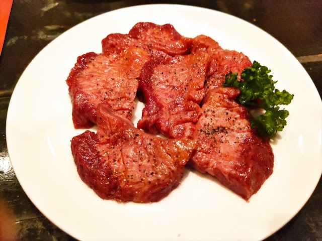
| 営業時間 | 月・火・水・木・金・土 17:00〜23:00 |
|---|---|
| 定休日 | 日曜 |
| 住所 | 群馬県前橋市城東町３丁目５−１２ |
| 予約 | 可 — ☎ 027-237-0201 ／ 公式サイト |
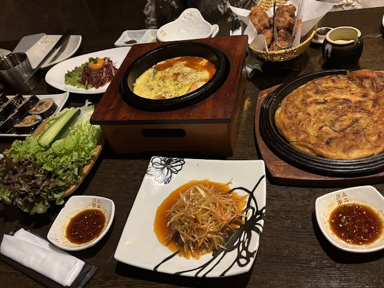
| 営業時間 | 火・水・木・金・土 17:00〜23:00 ／ 日 17:00〜22:00 |
|---|---|
| 定休日 | 月曜 |
| 住所 | 群馬県前橋市城東町２丁目３−８ 1F 市営パーク城東 |
| 予約 | 可 — ☎ 027-235-1631 |
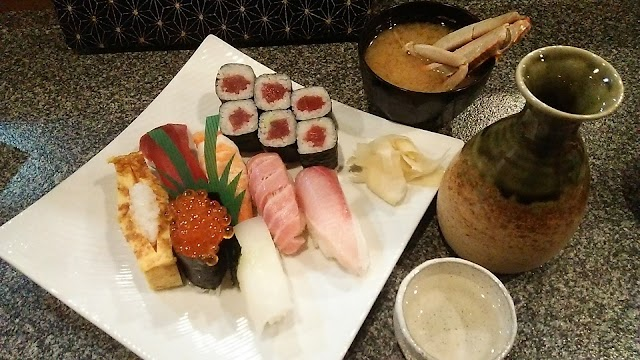
| 営業時間 | 火・水・木・金・土・日 17:00〜21:30 |
|---|---|
| 定休日 | 月曜 |
| 住所 | 群馬県前橋市粕川町室沢４５１−２ |
| 予約 | 可 — ☎ 027-285-2084 |
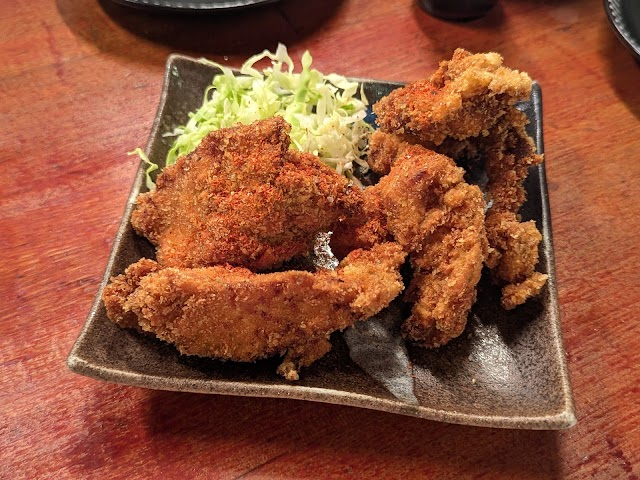
| 営業時間 | 月・火・水・木・金・土 17:30〜23:00 |
|---|---|
| 定休日 | 日曜 |
| 住所 | 群馬県前橋市南町３丁目１２−１ アークビレッジ２ |
| 予約 | 可 — ☎ 027-243-7110 |
| 営業時間 | 21:00頃〜翌4:00頃 |
|---|---|
| 定休日 | 無休 |
| 住所 | 群馬県前橋市千代田町５丁目１４−６ |
| 予約 | 可 — ☎ 027-234-0755 |
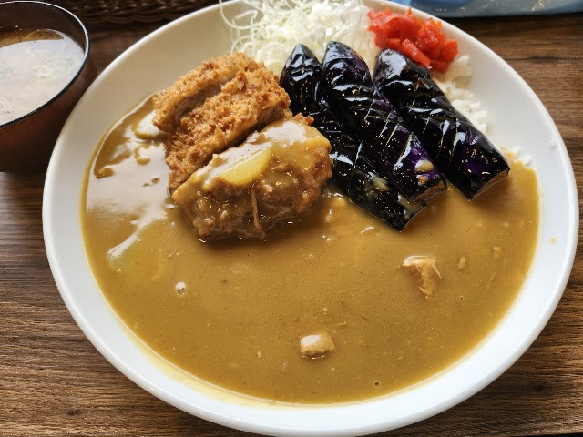
| 営業時間 | 月 12:00〜15:00 ／ 水・木・金 12:00〜14:15, 17:00〜20:00 ／ 土 12:00〜15:00, 17:00〜20:00 ／ 日 12:00〜17:30 |
|---|---|
| 定休日 | 火曜 |
| 住所 | 群馬県前橋市千代田町３丁目３−１８ レストランポンチ |
| 予約 | 要確認 — ☎ 027-231-2333 ／ 公式サイト |
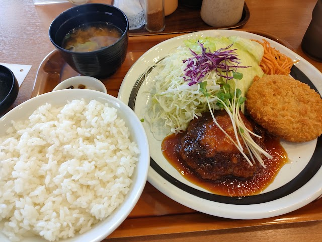
| 営業時間 | 月・火・水・木・金 11:00〜14:30, 17:30〜21:00 ／ 土 11:00〜14:30 |
|---|---|
| 定休日 | 日曜 |
| 住所 | 群馬県前橋市昭和町３丁目３１−７ |
| 予約 | 要確認 — ☎ 027-233-1055 ／ 公式サイト |
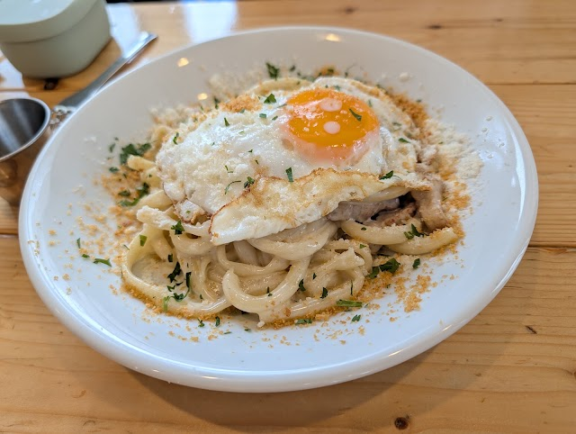
| 営業時間 | 火・水・木・金・土・日 11:30〜14:00, 18:00〜21:00 |
|---|---|
| 定休日 | 月曜 |
| 住所 | 群馬県前橋市千代田町２丁目７−２１ |
| 予約 | 可 — ☎ 027-289-2771 ／ 公式サイト |
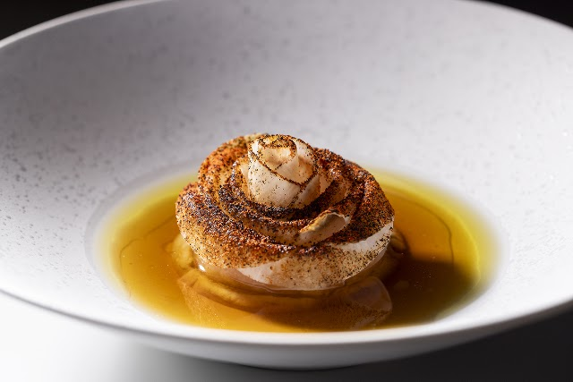
| 営業時間 | 月・火・水・木・日 18:00〜22:00 ／ 金・土 17:00〜22:00 |
|---|---|
| 定休日 | なし(要最終確認) |
| 住所 | 群馬県前橋市本町２丁目２−１５ 白井屋ビル |
| 予約 | 可 — ☎ 027-231-4618 ／ 公式サイト |
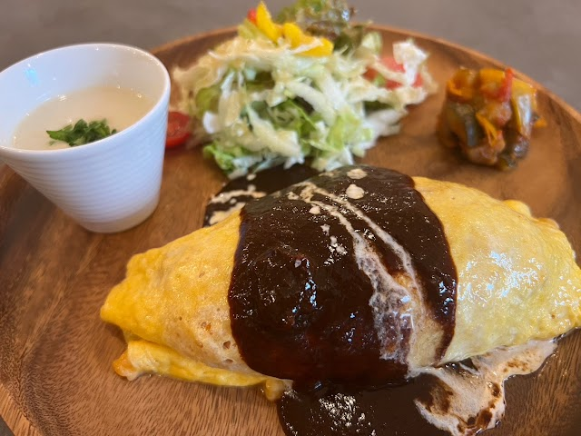
| 営業時間 | 火・水・木・金・土・日 11:30〜14:30, 17:00〜22:30 |
|---|---|
| 定休日 | 月曜 |
| 住所 | 群馬県前橋市本町２丁目１１−８ |
| 予約 | 可 — ☎ 070-1240-2118 ／ 公式サイト |
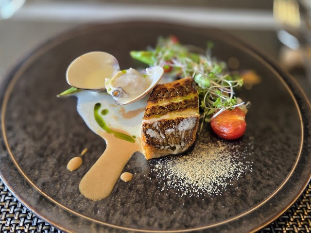
| 営業時間 | 火・水・木・金・土・日 11:30〜15:30, 18:00〜22:30 |
|---|---|
| 定休日 | 月曜 |
| 住所 | 群馬県前橋市西大室町３０２６−３ |
| 予約 | 可 — ☎ 027-288-0629 ／ 公式サイト |
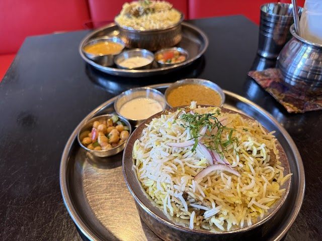
| 営業時間 | 月・火 11:00〜15:00 ／ 木・金・土・日 11:00〜15:00, 18:00〜21:00 |
|---|---|
| 定休日 | 水曜 |
| 住所 | 群馬県前橋市総社町総社２０１４−５ 大山マンション １０４ |
| 予約 | 可 — ☎ 090-4090-7963 ／ 公式サイト |
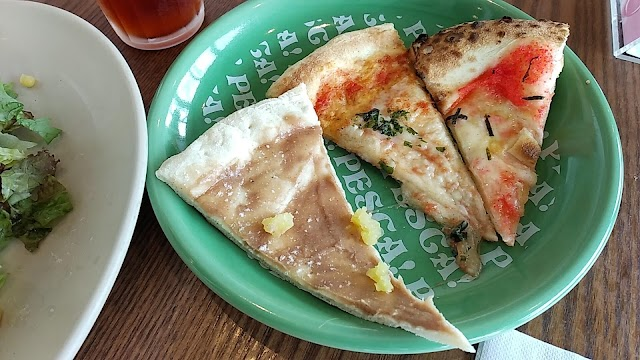
| 営業時間 | 月・水・木・金・土・日 11:00〜15:00, 17:00〜21:30 |
|---|---|
| 定休日 | 火曜 |
| 住所 | 群馬県前橋市六供町３丁目17−１ |
| 予約 | 可 — ☎ 027-289-8661 ／ 公式サイト |
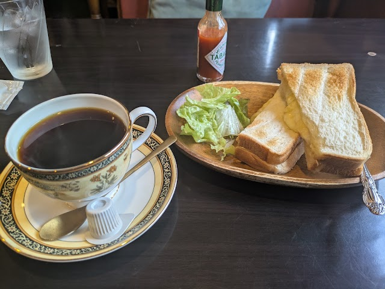
| 営業時間 | 月・火・木・金・土・日 8:00〜18:30 ／ 水 8:00〜18:00 |
|---|---|
| 定休日 | なし(要最終確認) |
| 住所 | 群馬県前橋市広瀬町３丁目２−７ |
| 予約 | 要確認 — ☎ 027-226-6341 ／ 公式サイト |
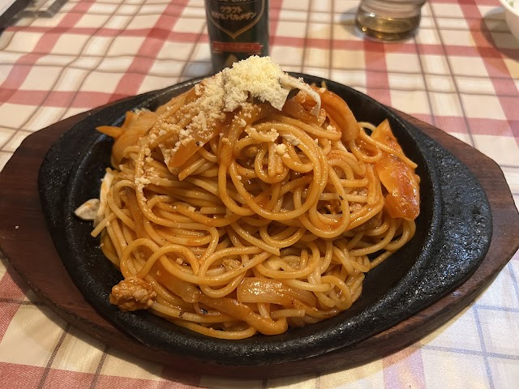
| 営業時間 | 月・火・金・土・日 10:00〜19:00 |
|---|---|
| 定休日 | 水・木曜 |
| 住所 | 群馬県前橋市千代田町２丁目１２−２ |
| 予約 | 可 — ☎ 027-231-5017 ／ 公式サイト |
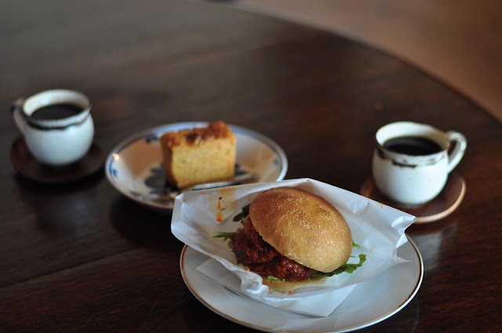
| 営業時間 | 水・木・金 13:00〜17:00 ／ 土・日 10:00〜17:00 |
|---|---|
| 定休日 | 月・火曜 |
| 住所 | 群馬県前橋市敷島町244−１ |
| 予約 | 要確認 — ☎ 027-896-6427 ／ 公式サイト |
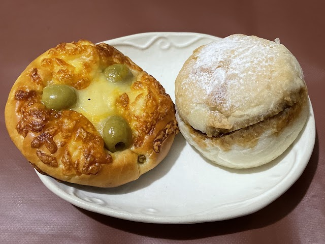
| 営業時間 | 水・木・金・土・日 10:00〜16:00 |
|---|---|
| 定休日 | 月・火曜 |
| 住所 | 群馬県前橋市本町２丁目２−１５ |
| 予約 | 要確認 — ☎ 027-231-2020 ／ 公式サイト |
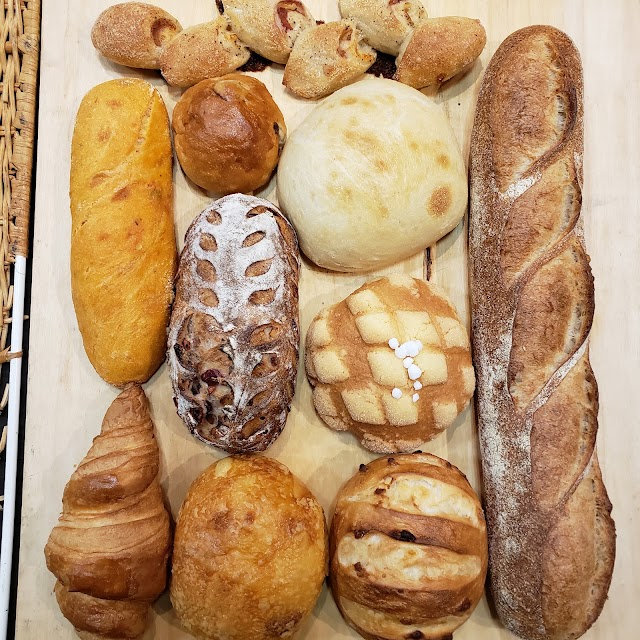
| 営業時間 | 水・木・金・土・日 9:00〜18:00 |
|---|---|
| 定休日 | 月・火曜 |
| 住所 | 群馬県前橋市青柳町１３３−７ |
| 予約 | 要確認 — ☎ 027-289-6096 ／ 公式サイト |
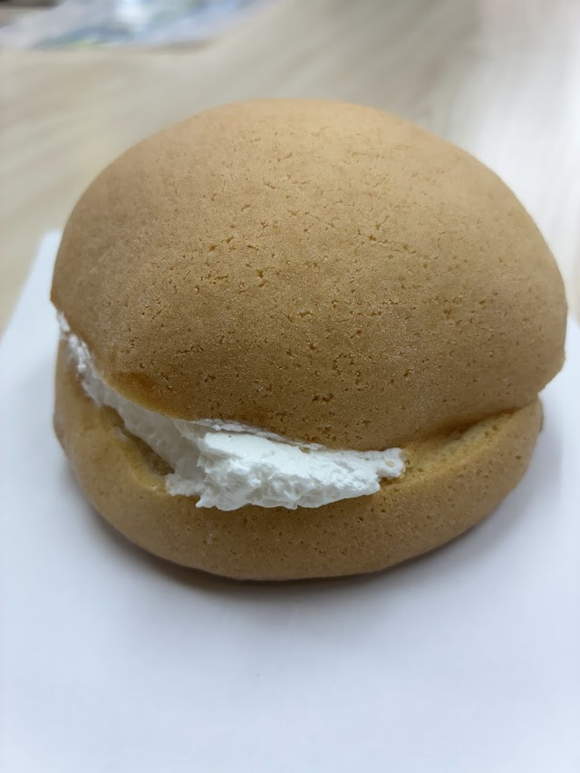
| 営業時間 | 月・火・水・木・金 8:00〜18:00 ／ 土 8:00〜17:00 |
|---|---|
| 定休日 | 日曜 |
| 住所 | 群馬県前橋市岩神町２丁目４−２６ |
| 予約 | 要確認 — ☎ 027-231-4020 ／ 公式サイト |
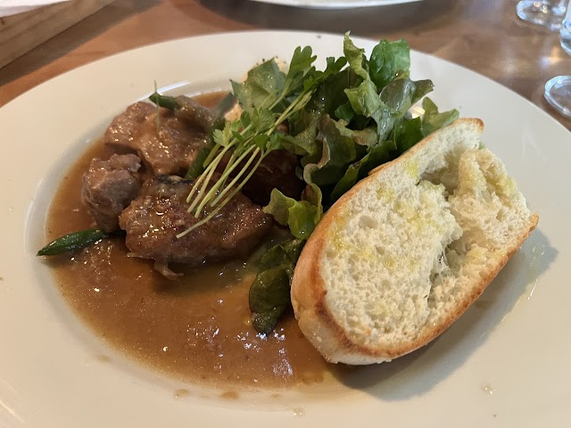
| 営業時間 | 火・水・木・金・土 11:00〜17:00 |
|---|---|
| 定休日 | 月・日曜 |
| 住所 | 群馬県前橋市本町１丁目１−７ |
| 予約 | 要確認 — 公式サイト |
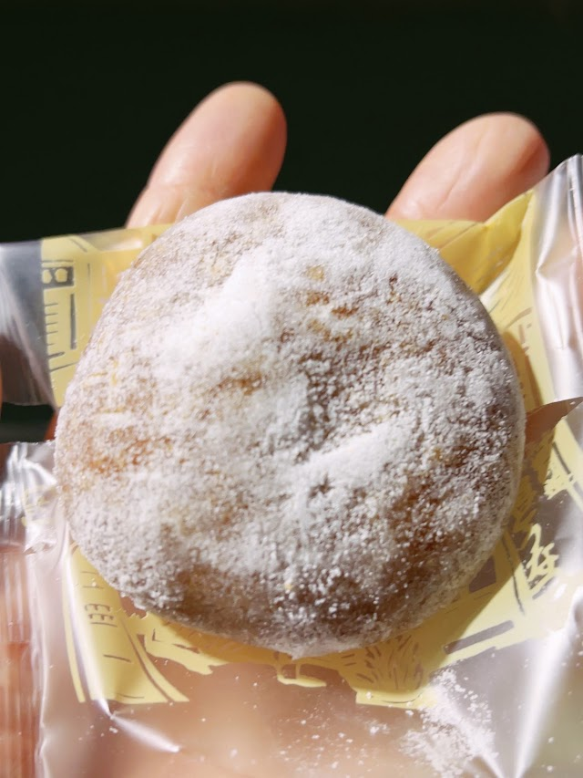
| 営業時間 | 月・水・木・金・土・日 9:00〜18:00 |
|---|---|
| 定休日 | 火曜 |
| 住所 | 群馬県前橋市鶴光路町３５３−２ |
| 予約 | 要確認 — ☎ 027-265-1883 ／ 公式サイト |
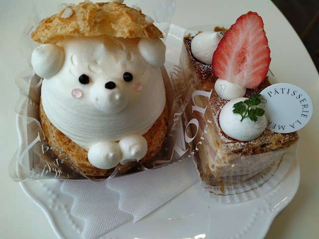
| 営業時間 | 月・水・木・金・土・日 10:00〜19:00 |
|---|---|
| 定休日 | 火曜 |
| 住所 | 群馬県前橋市元総社町１７１５ |
| 予約 | 要確認 — ☎ 027-257-6632 ／ 公式サイト |
本ガイドは個人利用目的で作成。掲載情報は2026年8月時点の調査に基づく。写真出典: Google Maps投稿写真(©各投稿者/Google)。